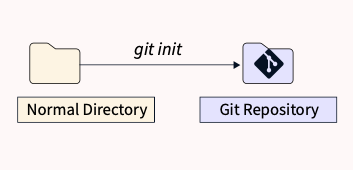

$ git init
Initialize an existing directory as a Git repository.

Initialize an existing directory as a Git repository.
Retrieve an entire repository from a hosted location via URL.
Show modified files in working directory, staged for your next commit.
Add a file as it looks now to your next commit (stage).
Unstage a file while retaining the changes in working directory.
Diff of what is changed but not staged
Diff of what is staged but not yet commited.
Commit your staged content as a new commit snapshot.
List your branches. A * will appear next to the currently active branch.
Create a new branch at the current commit.
Switch to another branch and check it out into your working directory.
Merge the specified branch's history into the current one.

Add a file as it looks now to your next commit (stage).
Show all commit logs with indication of any paths that moved.
Delete the file from the project and stage the removal for commit.
logs/ *.notes pattern*/
Save a file with desired patterns as .gitignore with either direct string matches or wildcard globs.
System wide ignore pattern for all local repositories
Add a git URL as an alias.
Fetch down all the branches from that Git remote.
Merge a remote branch into your current branch to bring it up to date.
Transmit local branch commits to the remote repository branch.
It is a shortcut to fetch and merge any commits from the tracking remote branch.
Apply any commits of the current branch ahead of specified one.
Clear staging area, rewrite working tree from specified commit.
Save modified and staged changes.
List stack-order of stashed file changes.
Write working from the top of the stash stack.

Discard the changes from the top of the stash stack.